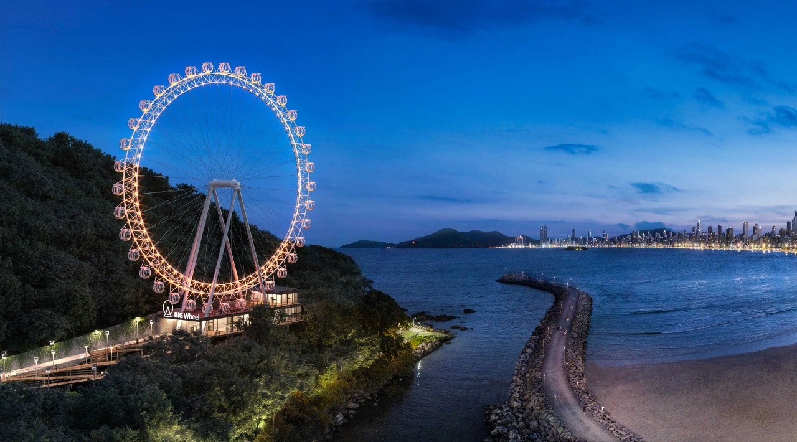

Pontos Turisticos
A cidade possui diversos pontos turisticos, derivando entre parques, reservas naturais e estruturas que você só encontra em Balneário Camboriú, e como a extenção territorial da cidade não é grande, você consegue aproveitar todas elas em um unico dia, se quiser, claro que o ideal é você tirar um bom tempo para curtir bem os momentos em cada uma delas, mas se, tempo for um fator crucial na sua estádia na cidade, não se preocupe, você pode desfrutar de tudo o que Balneário tem à oferecer, sem problemas.
FG Big Wheel (A roda gigante de Balneário Camboriú)
FG Big Wheel, a famosa roda gigante de Balneário Camboriú, sendo um dos cartões postais mais bonito e fotografado da cidade, conquistou o coração dos visitantes e dos moradores da região, ela possui 65m de diâmetro e seu ponto mais alto está a 82 metros de altura, conta com 36 cabines ventiladas com capacidade de até 6 pessoas, que proporciona vistas panorâmicas em 360 graus, num agradável passeio silencioso, limpo e seguro, ela conta ainda com áreas de convivência, banheiros, segurança, iluminação e Wi-fi.
O passeio tem uma duração média entre 15 à 20 minutos, os valores dos ingressos variam, onde o valor cheio está saindo por 60 reais, crinças entre 5-12 anos, idósos à cima de 60 anos, PCD, professores e militáres, tem direito a meia entrada, no valor de 30 reais, é importante frisar que, a meia entrada, não se áplica aos estudantes.
Para mais informações sobre a FG Big Wheel, você pode acessar acessar o site oficial deles, lá você poderá realizar a compra antecipada e ver tudo sobre descontos e promoções, vou deixar o link aqui pra vocês.
Link oficial da FG Big Wheel: https://fgbigwheel.com.br/
Parque Unipraias (TELEFÉRICO)
Se você busca um passeio em meio à natureza, o parque unipraias é o lugar certo para você e sua família, o parque é composto por 3 estações, interligando as praias central e de laranjeiras, com um total de 47 bondinhos, que te levam ao alto do morro onde você terá uma vista incrivel da cidade e do nosso lindo oceano atlântico, lá em cima você vai estar imerso em uma reserva natural, com trilhas que te levam a vistas únicas da cidade, nessa parte do parque você pode desfrutar de outras 3 atrações, a Floresta Encantada com seu lindo trenzinho, que te leva para um passeio incrivel dentro da rezerva, agora, se você está procurando adrenalina, o Youhooo! e o Zip Rider (tirolesa), são as atrações certas para você, o Yahooo! é uma especie de mini montanha russa, onde você e um acompanhante embarcam em um carrinho e descem, em alta velocidade por um trilho em meio a reserva, já o Zip Rider, é uma tirolesa que vai te levar para a estação de Laranjeiras, da maneira mais emocinante possivel, mas se fortes emoções não são para você, não se preocupe, você pode acessar a praia de Laranjeiras pelos bondinhos, de forma agradável e tranquila.
O parque conta com uma ampla aréa de alimentação, tanto em suas estações, como tambem no topo do morro, e na praia de laranjeiras possui uma enorme variedade de restaurantes, onde você pode desfrutar de um bom almoço ao lado de uma das praias mais bela da cidade.
Os valores dos ingressos e horários de funcionamento podem variar de acordo com a época do ano e vale ressaltar que, por se tratar de uma atração ao ar livre, as condições climáticas podem interferir na abertura do parque, por isso, recomendo acessar o site oficial do Parque Unipraias, antes de fazer sua visita, deixarei o link aqui para vocês.
Link oficial do Parque Unipraias: https://www.unipraias.com.br/
Barco Pirata
O Barco Pirata é um dos passeios mais divertidos de Balneário Camboriú, se não, o mais divertido, nesta atração, você desfruta de um belo passeio pela praia central de Balneário até a praia de laranjeiras, e dentro a embarcação, você ainda vivencia um teatro onde piratas travam uma batalha emocionante entre si, e o perdedor tem que andar na prancha, a atração conta varias embarcações, cada uma com o seu estilo e tamanho, e todas elas com o mesmo trajeto, e o legal, é que você pode ficar em Laranjeiras e curtir o dia na praia e voltar com qualquer uma das embarcações seguinte.
Além do passeio de barco, a cidade também conta com a aventura pirata, um local repleto de suvenirs piratas e atrações, como teatro, cinema interativo, jogos e muito mais que vale à pena conhecer.
Os valores dos ingressos e horários de funcionamento podem variar de acordo com a época do ano e vale ressaltar que, por se tratar de uma atração ao ar livre, as condições climáticas podem interferir no funcionamento da atração, por isso, recomendo acessar o site oficial antes de fazer sua visita, deixarei o link aqui para vocês.
Link oficial do Barco Pirata: https://www.barcopirata.com.br/
Link oficial da Aventura Pirata: https://www.aventurapirata.com.br/
MAIS ATRAÇÕES